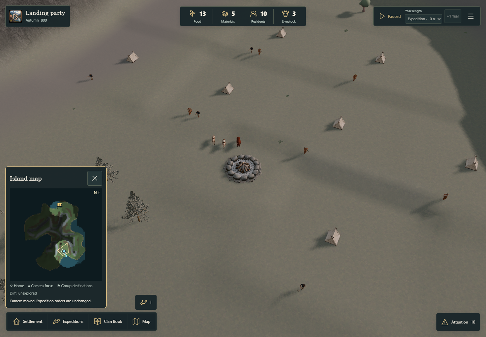
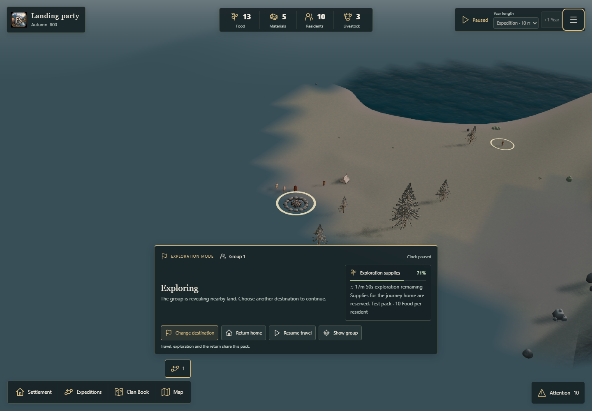
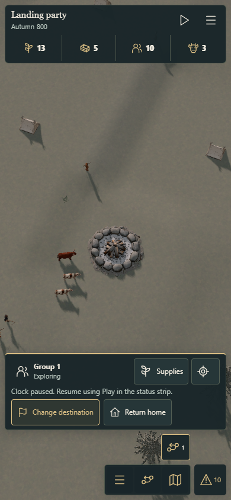
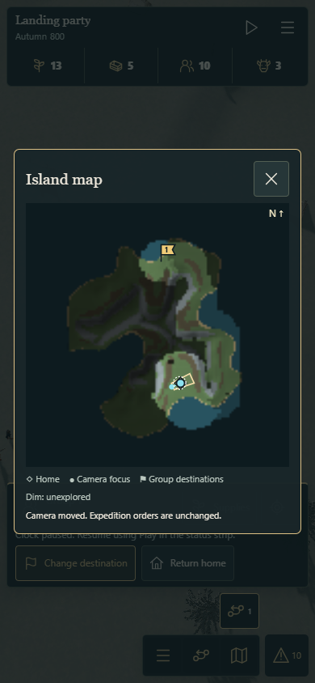
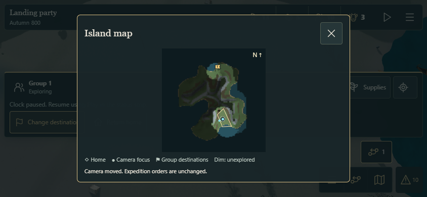
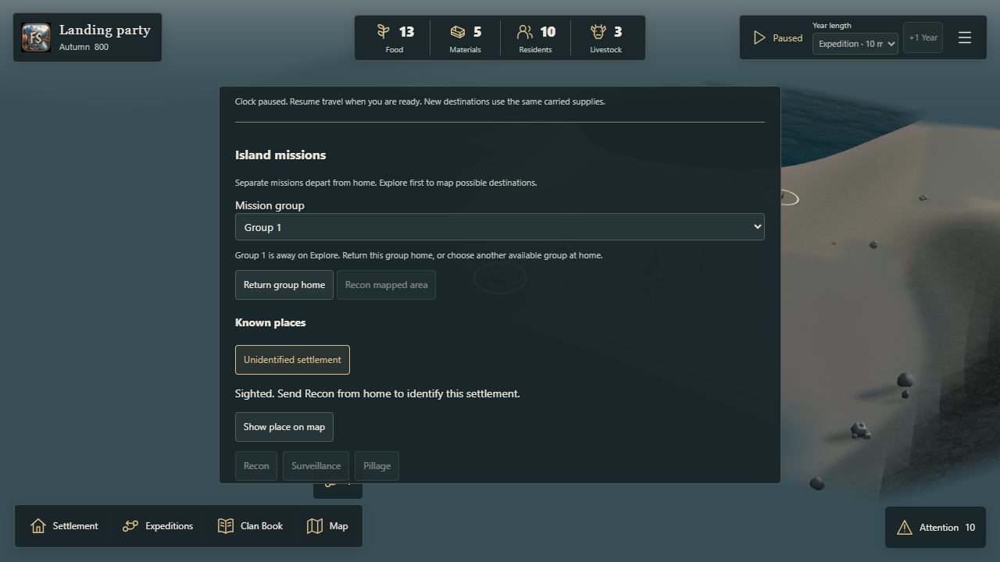

Open your settlement · Validation and measurements
Use Map in the existing navigation bar to show or hide the map. Settlement → View settlement returns the camera to the campfire. A numbered flag marks each expedition group's destination. Returning groups point Home; individuals are not marked.
Known points move only the camera. Dim unexplored terrain stays undiscovered; no hidden enemy markers appear. Mobile uses a deliberate map window with Close. The campaign continues running if it was already running.






Tested with Edge device/touch emulation. Physical iPhone/iPad usefulness and fit still need owner review.